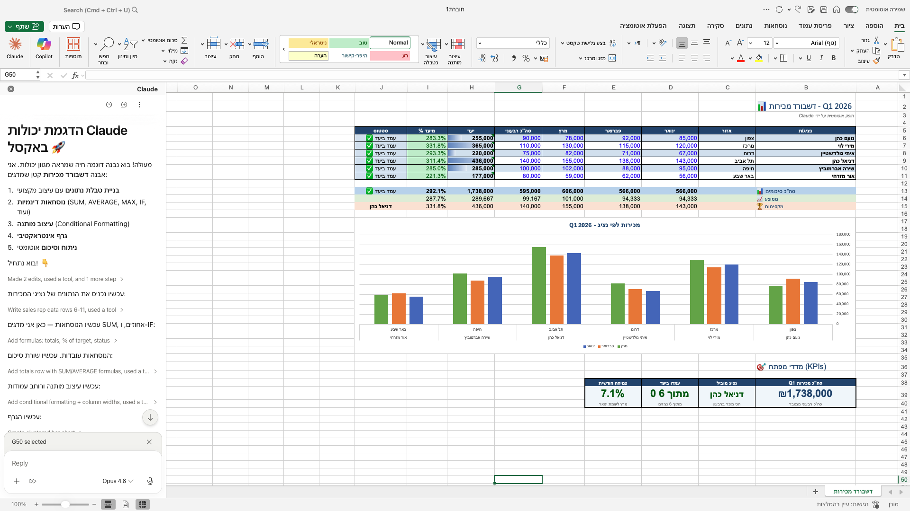

Claude
בתוך Excel.
התוסף הרשמי החדש של Anthropic מכניס את Claude לתוך Excel. הוא רואה את כל הגיליון, מבין נוסחאות, ובונה דשבורדים מבקשה אחת. הנה מה שצריך לדעת.
הבעיה שכולם מכירים
יושב מולך גיליון אקסל מלא. אולי תיק לקוח, אולי תזרים מזומנים, אולי דוח רבעוני. אתה רוצה בדיקה מהירה — האם משהו לא סביר. לסכם בכמה משפטים. להבין מה קורה בקובץ.
מה עשית עד עכשיו? פתחת ChatGPT. העתקת עמודה. לפעמים שתיים. נתת תיאור של מה שאתה מנסה לעשות. וקיווית שהוא הבין את ההקשר.
רוב הזמן הוא לא הבין. הוא קיבל את הנתונים בלי הקשר — בלי לראות מה השם של הטאב, בלי לדעת איזה תאים תלויים במי, בלי הנוסחאות.
זה השתנה.
מה זה Claude for Excel
Anthropic (החברה שמאחורי Claude) פרסמה תוסף רשמי ל-Microsoft Excel. אחרי התקנה, פאנל קטן מופיע בצד הימני של אקסל. זה Claude. הוא רואה את הקובץ הפעיל שלך — את כל הטאבים, את כל הנוסחאות, את כל הקשרים בין תאים, ואפילו מצטט תאים ספציפיים בתשובות שלו ("הסכום הזה מגיע מתא B14 בטאב Q1"). אתה כותב לו בעברית, הוא עונה.
זה לא צ'אטבוט שמשולב באקסל. זה Claude שעובד עם אקסל.

חמישה דברים שאי אפשר לעשות בלעדיו
1. קריאה של קובץ שירשת מאחר
קיבלת קובץ מקולגה. הוא בנה אותו לפני שנה. 8 טאבים, 200 נוסחאות, מבנה לא מתועד.
Claude מחזיר מפה של הקובץ: כל טאב, מה נמצא בו, מה הקשרים, איפה הנתונים הראשוניים, איפה התוצאות הסופיות. עם הפניות לתאים ספציפיים שאפשר לקפוץ אליהם.
2. בנייה של דשבורד מבקשה אחת
"בנה לי דשבורד מכירות עם נציגים, יעדים, גרף ו-KPIs."
Claude בונה הכל בתוך הקובץ שלך — לא ייצור קוד שאתה מעתיק. הוא יוצר תאים, ממלא נוסחאות, מוסיף עיצוב מותנה (ירוק/אדום), בונה גרף, ומסכם ב-KPIs. אתה רואה כל שינוי שהוא עושה כשהוא עושה אותו.
3. בנייה ועריכה של Pivot Tables בעברית
"תייצר Pivot של ההכנסות לפי חודש ולפי קטגוריה."
Claude יוצר את ה-Pivot, מסביר בכמה שורות מה הוא בנה ולמה, וממליץ על שיפורים. אם משהו לא ברור — שואל. אפשר לבקש שינויים בעברית פשוטה ("עכשיו תוסיף את הסכום הממוצע לכל קטגוריה").
4. איתור ותיקון נוסחאות שבורות
"למה התא Z47 מחזיר #REF!?"
Claude עוקב אחרי הנוסחה, מאתר את התא ה"שבור", מסביר למה זה קרה (בדרך כלל — מחקת שורה שהנוסחה הסתמכה עליה), ומציע תיקון. אפשר לבקש ממנו לבצע את התיקון או לראות אותו לפני.
5. עדכון הנחות בלי לשבור תלויות
יש לך מודל פיננסי עם הנחות בסיס (ריבית, אינפלציה, גידול). אתה רוצה לבדוק תרחיש: "מה קורה אם הריבית עולה ל-6%?"
Claude מעדכן את ההנחה ומשמר את כל התלויות — כל תא שתלוי בריבית מתעדכן אוטומטית. בלי לשבור את הקובץ, בלי ליצור עותק.
מה זה לא עושה
כן, יש מגבלות אמיתיות. כדאי לדעת אותן מראש.
1. אין VBA ואין Macros. התוסף לא רואה ולא מריץ קוד VBA או Macros. אם המודל שלך מסתמך על אוטומציה כזו — זה מחוץ לתחום.
2. אין Data Tables. טבלאות נתונים מובנות של אקסל (Data Tables) לא נתמכות. רק טווחים רגילים.
3. רק .xlsx ו-.xlsm. פורמטים אחרים (CSV, ODS) — לא.
4. הוא לא חליפה לאקסל ידני בכל תרחיש. משימות פשוטות וחוזרות עדיין מהירות יותר ידנית.
איך מתקינים — 3 צעדים
1. פותחים את חנות התוספים
ב-Excel: Insert ← Add-ins ← Get Add-ins. בחיפוש: כתבו "Claude".
2. התקנה
לחצו על "Claude for Excel" של Anthropic. Get it now — חינם להתקנה (התוסף עצמו לא עולה כסף; דרוש מנוי Claude בנפרד). אישור הרשאות (גישה לקובץ הפעיל).
3. התחברות
פאנל יופיע מצד ימין של Excel. Sign in — חיבור עם חשבון Claude שלך.
זמן כולל: כ-3 דקות.
דרישות מערכת
גרסאות Excel נתמכות: Microsoft 365 בלבד
- Excel ל-Web
- Excel ל-Windows (build 16.0.13127.20296 ומעלה)
- Excel ל-Mac (גרסה 16.46 ומעלה)
- Excel ל-iPad (גרסה 2.51 ומעלה)
מנוי Claude: Pro, Max, Team, או Enterprise. לא בגרסה החינמית.
למי זה שווה
שווה מאוד אם אתה:
- אנליסט שמקבל קבצים ירושה
- מתכנן פיננסי / רואה חשבון / סוכן ביטוח / יועץ
- יזם או מנהל שעובד עם נתונים פנימיים
- מי שכבר עייף מלהעתיק עמודות ל-ChatGPT
פחות רלוונטי אם אתה:
- משתמש ב-Excel רק לרשימות פשוטות
- מסתמך הרבה על VBA/Macros
- עובד על Excel 2016/2019 (גרסת רישיון קבוע)
הצעד הבא
אם יש לך מנוי Claude (Pro ומעלה): התקן עכשיו (3 דקות), פתח קובץ קיים, ושאל "תסכם לי את הקובץ הזה".
אם אין לך מנוי: קח את 7 הימים הראשונים של Pro, התחל איתו על אקסל. זה כנראה השימוש הכי משתלם של 7 הימים האלה.
- Use Claude for Excel — Anthropic — המסמך הרשמי, ממנו מאומתים כל המספרים והגרסאות
- Claude for Excel — Microsoft AppSource